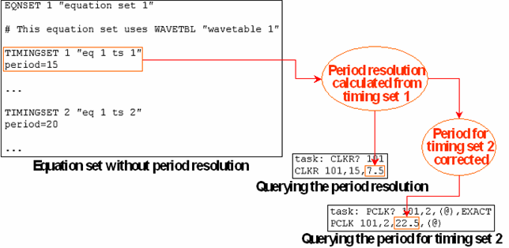
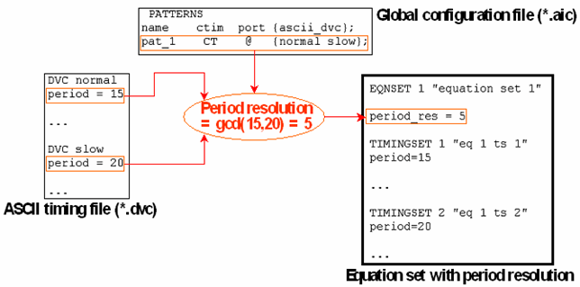

Calculating the Period Resolution
The period resolution can be defined explicitly in the equation set. If no resolution is specified, SmarTest calculates it automatically from the period of the first timing set within the equation set and from the resolution range determined by the board type. It is calculated as the largest number within the range that divides the period exactly.
The periods of the other timing sets are corrected if they are not multiples of this resolution. The following figure shows an example of this behavior:

Observe that in this example, the period of timing set 2 is corrected although 5 is a common denominator within the admitted range (4 to 10) for both timing set periods.
The ASCII interface explicitly defines a period resolution for every equation set in which no period length is defined by equation variables. If possible, this value is determined as the largest number r within the range determined by the board type such that r is a common denominator of the period lengths of all timing sets that belong to the respective equation set. This feature of the ASCII interface is intended to correct the behavior of SmarTest described above.
The following figure shows this corrective effect for the example of the previous figure:

If you want to prevent the ASCII interface from defining a period resolution, you must define the period of at least one timing set with an equation variable.